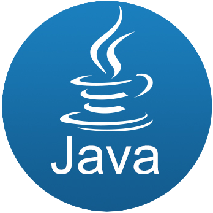

教程
HTML5 简介
超文本标记语言（英语：HyperText Markup Language，简称：HTML）是一种用于创建网页的标准标记语言。
您可以使用 HTML 来建立自己的 WEB 站点，HTML 运行在浏览器上，由浏览器来解析。
HTML5 是 HyperText Markup Language 5 的缩写，HTML5 技术结合了 HTML4.01 的相关标准并革新。
HTML5符合现代网络发展要求，在 2008 年正式发布。
HTML5 由不同的技术构成，其在互联网中得到了非常广泛的应用，提供更多增强网络应用的标准机。
与传统的技术相比，HTML5 的语法特征更加明显，并且结合了 SVG 的内容。
HTML5 在 2012 年已形成了稳定的版本。
CSS 简介

层叠样式表（英文全称：Cascading Style Sheets，简称：CSS）是一种用来表现HTML（标准通用标记语言的一个应用）或XML（标准通用标记语言的一个子集）等文件样式的计算机语言。CSS不仅可以静态地修饰网页，还可以配合各种脚本语言动态地对网页各元素进行格式化。
CSS3 是CSS（层叠样式表）技术的升级版本，于1999年开始制订，2001年5月23日W3C完成了CSS3的工作草案，主要包括盒子模型、列表模块、超链接方式、语言模块、背景和边框、文字特效、多栏布局等模块。
Java 简介
Java 是一门面向对象的编程语言，不仅吸收了C++语言的各种优点，还摒弃了C++里难以理解的多继承、指针等概念，因此Java语言具有功能强大和简单易用两个特征。Java语言作为静态面向对象编程语言的代表，极好地实现了面向对象理论，允许程序员以优雅的思维方式进行复杂的编程。
MySQL™ 简介

MySQL 是一个关系型数据库管理系统，由瑞典 MySQL AB 公司开发，属于 Oracle 旗下产品。MySQL 是最流行的关系型数据库管理系统之一，在 WEB 应用方面，MySQL是最好的 RDBMS (Relational Database Management System，关系数据库管理系统) 应用软件之一。